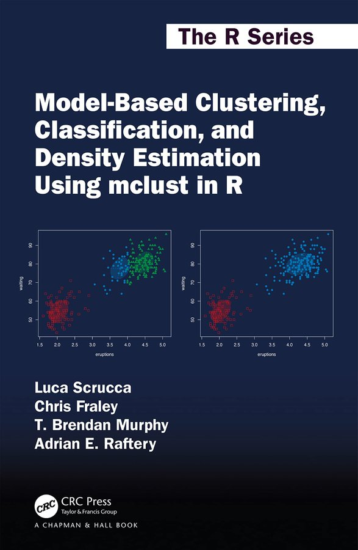

Luca Scrucca
Università degli Studi di Perugia
Academic Bio
Hello, I’m an applied statistician. In a broader sense, I’m also a data scientist because I do data analysis, and I do research on the methodology and computational aspects of data analysis. I’m an enthusiastic R user and package developer.
I’m also serving as Associate Editor for Journal of Statistical Software and Statistics and Computing.
Interests
- Mixture models
- Model-based clustering and classification
- Data Science
- Statistical learning
- Dimension reduction methods and regression graphics
- Genetic and evolutionary algorithms
Education
Università degli Studi di Perugia
2000
University of Minnesota
2000
Research
Book

Scrucca L., Fraley C., Murphy T. B. and Raftery A. E. (2023) Model-Based Clustering, Classification, and Density Estimation Using mclust in R, Chapman & Hall/CRC Press.
ISBN: 978-1032234953
eBook ISBN: 978-1003277965
Selected publications
Software
I’m the author and/or maintainer of several packages and functions written in R, a free software environment for statistical computing and graphics, using RStudio, an integrated development environment (IDE) for R.
Teaching
Dipartimento di Economia (sede di Terni)
Corso di Laurea Triennale in “Economia Aziendale”
Dipartimento di Ingegneria
Corso di Laurea Triennale/BSc in “Engineering Management”
Dipartimento di Economia
Corso di Laurea Magistrale in “Finanza e Metodi Quantitativi per l’Economia”
Statistical Methods for Data Science
Dipartimento di Matematica e Informatica
Corso di Laurea Magistrale in “Informatica”
Curriculum Artificial Intelligence
Dottorato in Matematica Informatica e Statistica (UniFI, UniPG, INdAM)
Dottorato in Economia (UniPG)
Contact
Dipartimento di Economia
Università degli Studi di Perugia